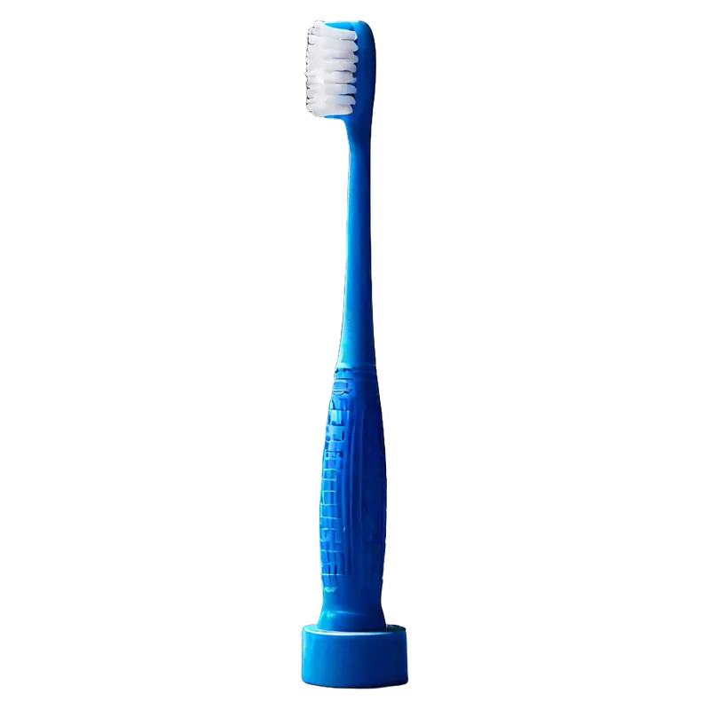
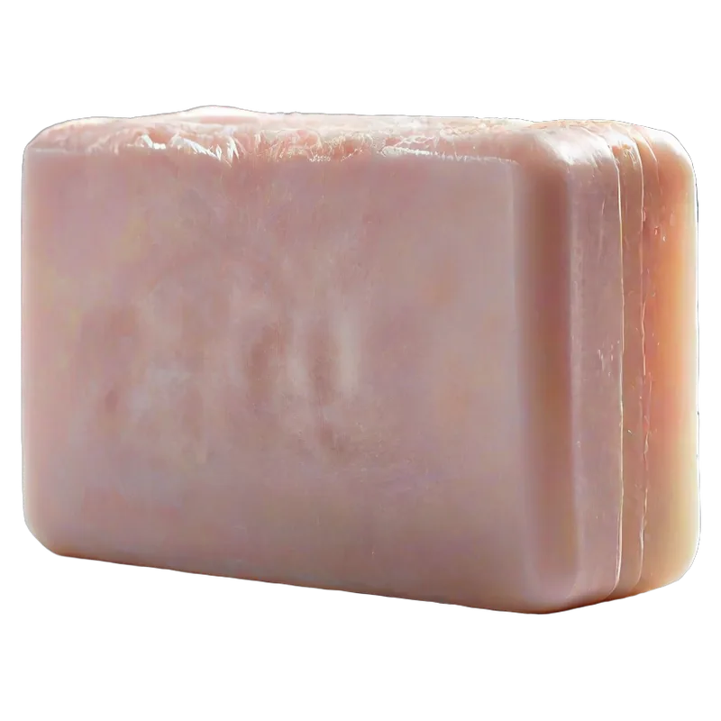
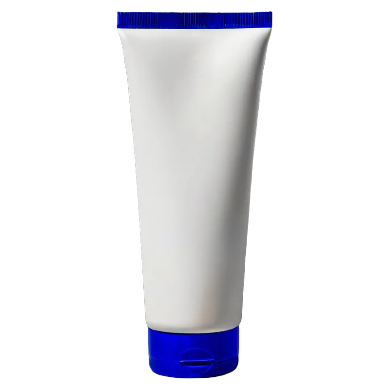
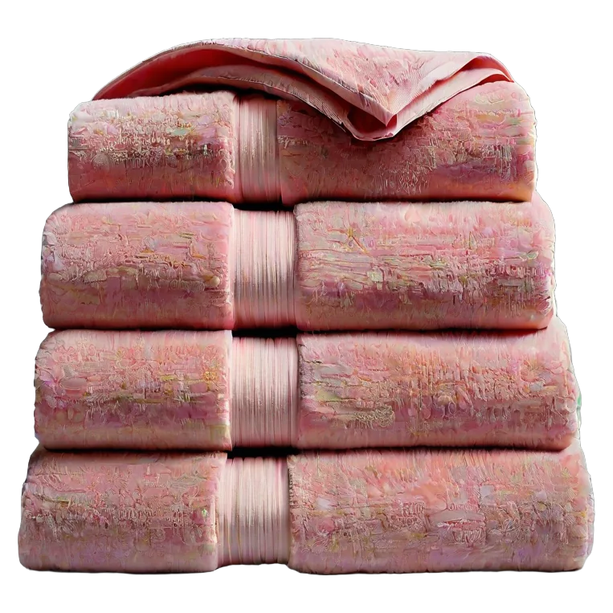
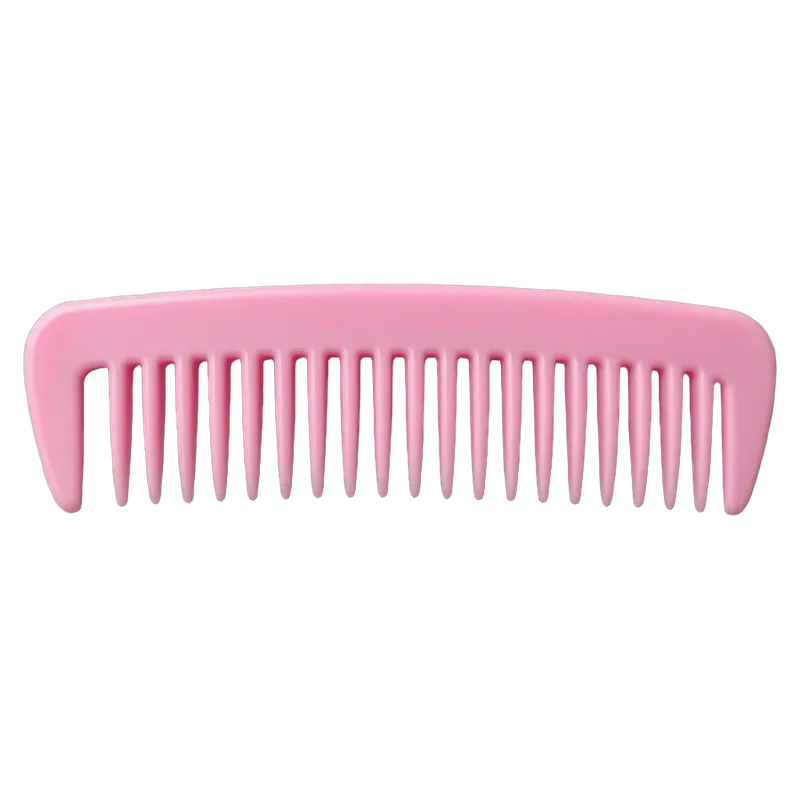
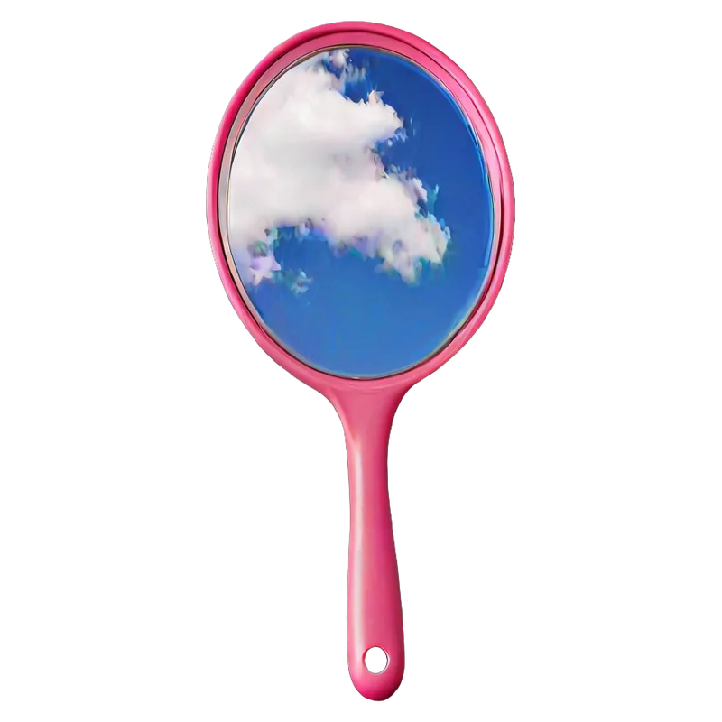
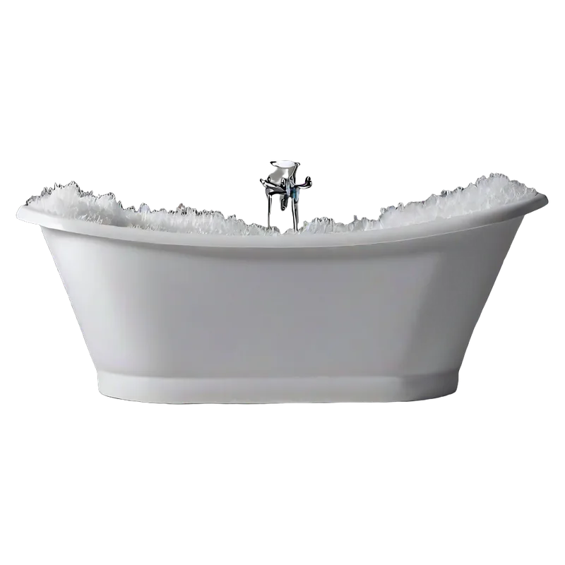
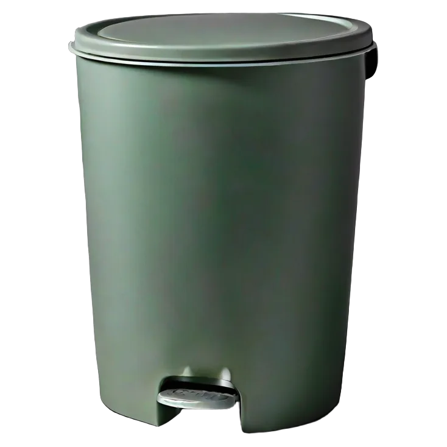

صَابُون
كِتَابِي الْأَوَّل
نَظَافَتِي

صِغَارُ الضَّاد
24-clean · page 1 · front cover
صَابُون

24-clean · page 2 · item 01
فُرْشَاةُ أَسْنَان
24-clean · page 3 · item 02
مَعْجُونُ أَسْنَان

24-clean · page 4 · item 03
مِنْشَفَة

24-clean · page 5 · item 04
مُشْط

24-clean · page 6 · item 05
مِرْآة

24-clean · page 7 · item 06
مَغْسَلَة
24-clean · page 8 · item 07
حَوْضُ اسْتِحْمَام

24-clean · page 9 · item 08
إِسْفَنْجَة
24-clean · page 10 · item 09
مِنْدِيل
24-clean · page 11 · item 10
مِكْنَسَة
24-clean · page 12 · item 11
سَلَّةُ مُهْمَلَات

24-clean · page 13 · item 12
أَيْنَ الصَّابُونُ؟
24-clean · page 14 · question 1
أَيْنَ الْمُشْطُ؟
24-clean · page 15 · question 2
أَيْنَ الْمِرْآةُ؟
24-clean · page 16 · question 3
أَيْنَ الْمِنْشَفَةُ؟
24-clean · page 17 · question 4
أَيْنَ الْمِكْنَسَةُ؟
24-clean · page 18 · question 5
كُلُّهَا مَعًا!
فُرْشَاةُ أَسْنَان
مَعْجُونُ أَسْنَان
مِنْشَفَة
مُشْط
مِرْآة
مَغْسَلَة
حَوْضُ اسْتِحْمَام
إِسْفَنْجَة
مِنْدِيل
مِكْنَسَة
سَلَّةُ مُهْمَلَات
24-clean · page 19 · all together
صِغَارُ الضَّاد
يتعلّم طفلك أسماء أدوات النظافة التي يستعملها كل يوم.
من عمر سنة إلى ٣ سنوات
ISBN / BARCODEprinter places it here
24-clean · page 20 · back cover